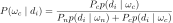
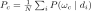
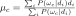
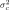
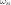
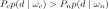
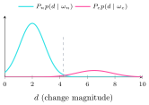

Method
- Build
 : magnitude of the change vector (optical) or log-ratio (SAR).
: magnitude of the change vector (optical) or log-ratio (SAR). - Model each class (Gaussian for differences of optical data; generalized Gaussian or Nakagami-type densities for SAR ratios).
- EM, from an initial split (e.g. a rough threshold):
- E-step: posterior of each pixel

; - M-step:

,
,
likewise; same for
; - iterate until the parameters stop changing (the likelihood never decreases).
- E-step: posterior of each pixel
- Decision: Bayes rule

, i.e. a threshold where the weighted densities cross.
where the weighted densities cross. - Context: Markov random fields or majority filtering add the prior that changes form compact regions.
Picture

of the difference image: the weighted densities of the no-change and change classes, estimated by EM, and the Bayes threshold where they cross.The Bayes threshold (dashed) sits where the two weighted densities cross.
Intuition
Without labels, let the histogram of differences explain itself as "a big hill of nothing happened" plus "a small hill of change", and cut where one becomes more likely than the other.
Pitfall
EM finds a local optimum and assumes the chosen family of densities fits: a strongly non-Gaussian unchanged class (seasonal effects, misregistration) pulls the threshold and floods the map with false changes.